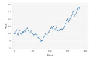

A toolkit for financial computing
We model stocastic processes via a sub type of the abstract StochasticProcess type. All stochastic processes are governed by a generic stochastic differential equation of the type:
$d\mathrm{x}_t = \mu(t,x_t)\mathrm{d}t + \sigma(t,\mathrm{x}_t) \cdot d\mathrm{W}_t$
evolve(sp::StochasticProcess, t0, x0, dt, dw)
Evolve a stochastic process for a given time step and a specified Wiener step
$E(\mathrm{x}_0,t_0,\Delta t) + S(\mathrm{x}_0,t_0,\Delta t) \cdot \Delta \mathrm{w}$
apply_change(sp::StochasticProcess, x, dx)
Apply a step change. The default implementation is an addition, but this can be overridden for sub-types.
$\mathrm{x} + \Delta \mathrm{x}$
drift(sp::StochasticProcess, t, x)
The drift portion of a stochastic process
$\mu(t, \mathrm{x}_t)$
diffusion(sp::StochasticProcess, t, x)
The diffusion portion of stochastic process
$\sigma(t, \mathrm{x}_t)$
An implementation of Euler Discretisation
drift_discretize(sp::StochasticProcess, t0::Real, x0::AbstractVector, dt::Real)
Discretize the drift of a stochastic process
$\mu(t_0, \mathbf{x}_0) \Delta t$
diffusion_discretize(sp::StochasticProcess, t0::Real, x0::AbstractVector, dt::Real)
Discretize the diffusion of a stochastic process
$\sigma(t_0, \mathbf{x}_0) \sqrt{\Delta t}$
covariance_discretize(sp::StochasticProcess, t0, x0, dt)
$\sigma(t_0, \mathbf{x}_0)^2 \Delta t$
GeometricBrownianMotion(initial_value, mu, sigma)
Model a Geometric Brownian Motion, governed by the stochastic differential equation:
$dS(t, S) = \mu S dt + \sigma S dW_t$
To simulate a series of prices from a Geometric Brownian Motion:
using Distributions
bm=Ito.Process.GeometricBrownianMotion(100, .1, .2)
t=0; x=bm.start; dt=.001
W=Normal(0, 1)
for i=1:1000
t=t+dt
x=Ito.Process.evolve(bm, t, x, dt, rand(W))
end
This will produce a price process looking like this (Charts by Gadfly)

GenericBlackScholesProcess(start, yield_term_structure, dividend_term_structure, volatility_term_structure)
A generalized Black-Scholes process, governed by the stochastic differential equation:
$dS(t, S) = (r(t) - q(t) - \frac {\sigma(t, S)^2}{2}) dt + \sigma dW_t$